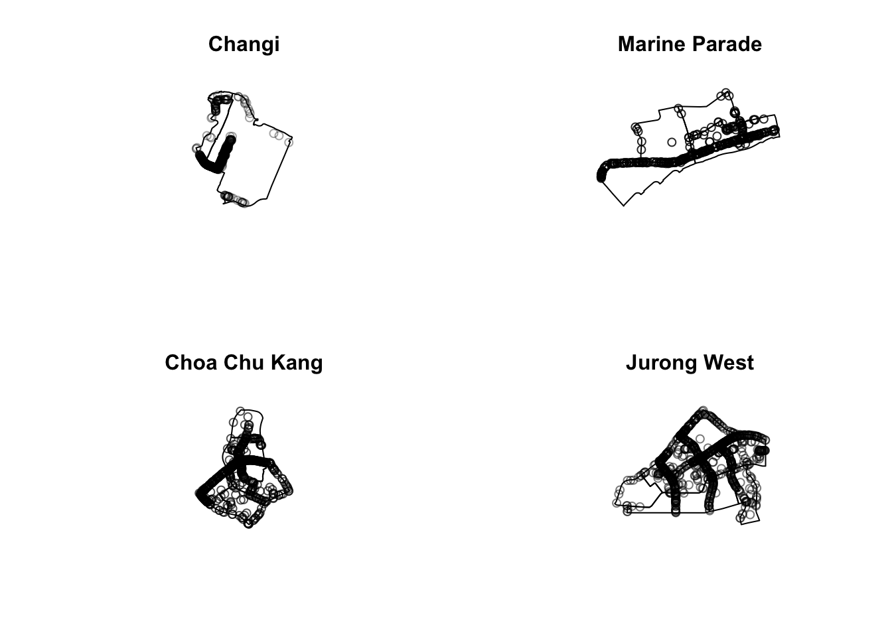

pacman::p_load(sf, spNetwork, tmap, classInt, viridis, tidyverse, list, arrow, lubridate, tidyverse, readr, sp, maptools, raster, spatstat, spdep)Take Home Exercise 1
Overview
Setting the Scene
Human mobility, the movement of human beings in space and time, reflects the spatial-temporal characteristics of human behavior. With the advancement Information and Communication Technologies (ICT) especially smart phone, a large volume of data related to human mobility have been collected. By using appropriate GIS analysis methods, these data are potentially useful in supporting smart city planning and management.
In Singapore, one of the important source of data related to human mobility is from Land Transport Authority (LTA) DataMall. Two data sets related to human mobility are provided by the portal, they are: Passenger Volume by Origin Destination Train Stations and Passenger Volume by Origin Destination Bus Stops. One of the limitation of these data sets is that their location are biased to either bus stops or MRT/LRT stations. In 2020, another very interesting human mobility data set called Grab Posisi was released by GRAB, one of the largest shared taxi operator in South-east Asia. There are two data sets been released and one of them is for Singapore.
Grab is one of the most frequently used services in Singapore, with ride hailing services to ordering food to be delivered via Grab. In this assignment we will be looking at Grab’s ride hailing services by looking at the end destinations of users taking trips and see its distribution across Singapore and specifically Singapore’s roads. This will be useful in identifying congestion rates and much more at these roads.
Objectives
Geospatial analytics hold tremendous potential to address complex problems facing society. In this study, you are tasked to apply appropriate spatial point patterns analysis methods to discover the geographical and spatio-temporal distribution of Grab hailing services locations in Singapore.
The Task
The specific tasks of this take-home exercise are as follows:
Using appropriate function of sf and tidyverse, preparing the following geospatial data layer in sf tibble data.frames:
Grab taxi location points either by origins or destinations.
Road layer within Singapore excluding outer islands.
Singapore boundary layer excluding outer islands
Using the extracted data, derive traditional Kernel Density Estimation layers.
Using the extracted data, derive either Network Kernel Density Estimation (NKDE) or Temporal Network Kernel Density Estimation (TNKDE)
Using appropriate tmap functions, display the kernel density layers on openstreetmap of Singapore.
Describe the spatial patterns revealed by the kernel density maps
Getting Started
Data Acquisition
| Dataset Name | Source |
|---|---|
| Grab Posisi Dataset | https://engineering.grab.com/grab-posisi |
| MPSZ-2019 Zonal data of Singapore | Master Plan 2019 Subzone Boundary (No Sea) from Data.gov.sg |
| Coastal Boundary Data of Singapore (ESRI shapefile format) | Provided by SLA |
| OpenStreetMap Road Network Dataset | Geofabrik download server. |
Installing and Loading Packages
Lets install the relevant R libraries needed using pacman.
Importing and Preparing Grab Aspatial Data
Reading the grab aspatial data:
df <- read_parquet("../../data/GrabPosisi/part-00000.parquet")
df# A tibble: 3,034,553 × 9
trj_id driving_mode osname pingtimestamp rawlat rawlng speed bearing accuracy
<chr> <chr> <chr> <int> <dbl> <dbl> <dbl> <int> <dbl>
1 70014 car andro… 1554943236 1.34 104. 18.9 248 3.9
2 73573 car andro… 1555582623 1.32 104. 17.7 44 4
3 75567 car andro… 1555141026 1.33 104. 14.0 34 3.9
4 1410 car andro… 1555731693 1.26 104. 13.0 181 4
5 4354 car andro… 1555584497 1.28 104. 14.8 93 3.9
6 32630 car andro… 1555395258 1.30 104. 23.2 73 3.9
7 64631 car andro… 1554768955 1.35 104. 0 82 3
8 76484 car andro… 1554783532 1.34 104. 3.98 321 3.65
9 65747 car ios 1554898418 1.29 104. 4.68 324 50
10 60478 car ios 1555593189 1.33 104. 16.5 31 16
# ℹ 3,034,543 more rowsNext we need to find the starting or ending points of trips which can be done by grouping the trips by their trip_id and sorting the entries by their timestamp. Naturally, the entry of a trip_id with the earlier timestamp will be when the user boarded the car and the latest timestamp entry will reveal the destinations. First we need ton convert the timestamps to datetime format for efficient sorting.
df$pingtimestamp <- as_datetime(df$pingtimestamp)Grab taxi location points either by origins:
origin_df <- df %>%
group_by(trj_id) %>%
arrange(pingtimestamp) %>%
filter(row_number()==1) %>%
mutate(weekday = wday(pingtimestamp,
label=TRUE,
abbr=TRUE),
start_hr = factor(hour(pingtimestamp)),
day = factor(mday(pingtimestamp)))Grab taxi location points either by destinations:
destination_df <- df %>%
group_by(trj_id) %>%
arrange(desc(pingtimestamp)) %>%
filter(row_number()==1) %>%
mutate(weekday = wday(pingtimestamp,
label=TRUE,
abbr=TRUE),
end_hr = factor(hour(pingtimestamp)),
day = factor(mday(pingtimestamp)))
destination_df# A tibble: 28,000 × 12
# Groups: trj_id [28,000]
trj_id driving_mode osname pingtimestamp rawlat rawlng speed bearing
<chr> <chr> <chr> <dttm> <dbl> <dbl> <dbl> <int>
1 54687 car android 2019-04-21 23:56:37 1.44 104. 1.19 299
2 81574 car ios 2019-04-21 23:56:33 1.34 104. 17.4 117
3 17190 car android 2019-04-21 23:56:30 1.34 104. 9.09 201
4 13793 car android 2019-04-21 23:56:25 1.32 104. 5.55 180
5 39014 car ios 2019-04-21 23:56:11 1.33 104. 14.1 179
6 41170 car ios 2019-04-21 23:56:09 1.32 104. 13.0 73
7 64519 car ios 2019-04-21 23:55:36 1.43 104. 12.6 210
8 70461 car ios 2019-04-21 23:55:29 1.29 104. 7.53 53
9 41154 car ios 2019-04-21 23:54:49 1.32 104. 14.4 163
10 5452 car ios 2019-04-21 23:54:28 1.33 104. 12.0 347
# ℹ 27,990 more rows
# ℹ 4 more variables: accuracy <dbl>, weekday <ord>, end_hr <fct>, day <fct>Lets preview the destination_df:
head(destination_df)# A tibble: 6 × 12
# Groups: trj_id [6]
trj_id driving_mode osname pingtimestamp rawlat rawlng speed bearing
<chr> <chr> <chr> <dttm> <dbl> <dbl> <dbl> <int>
1 54687 car android 2019-04-21 23:56:37 1.44 104. 1.19 299
2 81574 car ios 2019-04-21 23:56:33 1.34 104. 17.4 117
3 17190 car android 2019-04-21 23:56:30 1.34 104. 9.09 201
4 13793 car android 2019-04-21 23:56:25 1.32 104. 5.55 180
5 39014 car ios 2019-04-21 23:56:11 1.33 104. 14.1 179
6 41170 car ios 2019-04-21 23:56:09 1.32 104. 13.0 73
# ℹ 4 more variables: accuracy <dbl>, weekday <ord>, end_hr <fct>, day <fct>Importing and Preparing Geospatial Data
We need to retrieve the coastal outline of Singapore so that we are able to fetch the grab trips specifically within these boundaries.
sg_sf <- st_read(dsn = "../../data/geospatial", layer="CostalOutline")Reading layer `CostalOutline' from data source
`/Users/maarunipandithurai/Documents/maars202/geospatial/IS415-GAA/data/geospatial'
using driver `ESRI Shapefile'
Simple feature collection with 60 features and 4 fields
Geometry type: POLYGON
Dimension: XY
Bounding box: xmin: 2663.926 ymin: 16357.98 xmax: 56047.79 ymax: 50244.03
Projected CRS: SVY21mpsz_sf <- st_read(dsn = "../../data/geospatial", layer = "MP14_SUBZONE_WEB_PL")Reading layer `MP14_SUBZONE_WEB_PL' from data source
`/Users/maarunipandithurai/Documents/maars202/geospatial/IS415-GAA/data/geospatial'
using driver `ESRI Shapefile'
Simple feature collection with 323 features and 15 fields
Geometry type: MULTIPOLYGON
Dimension: XY
Bounding box: xmin: 2667.538 ymin: 15748.72 xmax: 56396.44 ymax: 50256.33
Projected CRS: SVY21#mpsz_sf <- st_read(dsn = "../../data/takehomeassigment1/MPSZ-2019", layer = "MPSZ-2019")MAPPING THE GEOSPATIAL DATA SETS
After checking the referencing system of each geospatial data data frame, it is also useful for us to plot a map to show their spatial patterns.
plot(sg_sf)plot(mpsz_sf)
We need to extract the geospatial data present in the aspatial dataset in the columns “rawlng” and “rawlat” and transform it to fit Singapore’s Coordinate system using crs = 3414.
trips_sf <- st_as_sf(destination_df,
coords = c("rawlng", "rawlat"),
crs=4326) %>%
st_transform(crs = 3414)
glimpse(trips_sf)Rows: 28,000
Columns: 11
Groups: trj_id [28,000]
$ trj_id <chr> "54687", "81574", "17190", "13793", "39014", "41170", "6…
$ driving_mode <chr> "car", "car", "car", "car", "car", "car", "car", "car", …
$ osname <chr> "android", "ios", "android", "android", "ios", "ios", "i…
$ pingtimestamp <dttm> 2019-04-21 23:56:37, 2019-04-21 23:56:33, 2019-04-21 23…
$ speed <dbl> 1.190000, 17.374184, 9.088703, 5.552219, 14.058416, 12.9…
$ bearing <int> 299, 117, 201, 180, 179, 73, 210, 53, 163, 347, 22, 193,…
$ accuracy <dbl> 3.605, 8.000, 4.000, 3.900, 4.000, 5.000, 8.000, 10.000,…
$ weekday <ord> Sun, Sun, Sun, Sun, Sun, Sun, Sun, Sun, Sun, Sun, Sun, S…
$ end_hr <fct> 23, 23, 23, 23, 23, 23, 23, 23, 23, 23, 23, 23, 23, 23, …
$ day <fct> 21, 21, 21, 21, 21, 21, 21, 21, 21, 21, 21, 21, 21, 21, …
$ geometry <POINT [m]> POINT (22837.7 46850), POINT (43956.34 35640.34), …Since we are only using the geometry data as part of our analysis let’s grab that column only and view it.
trips_sf_geometry <- trips_sf$geometry
trips_sf_geometryGeometry set for 28000 features
Geometry type: POINT
Dimension: XY
Bounding box: xmin: 3638.685 ymin: 25350.05 xmax: 50024.92 ymax: 49469.41
Projected CRS: SVY21 / Singapore TM
First 5 geometries:Notice that all the geospatial layers are within the same map extend. This shows that their referencing system and coordinate values are referred to similar spatial context. This is very important in any geospatial analysis.
Alternatively, we can also prepare a pin map by using the code chunk below.
Plotting the grab taxi data:
#using 'plot' as 'view' does not render on html page
tmap_mode('plot')
tm_shape(trips_sf_geometry)+
tm_dots()GEOSPATIAL DATA WRANGLING
Although simple feature data frame is gaining popularity again sp’s Spatial* classes, there are, however, many geospatial analysis packages require the input geospatial data in sp’s Spatial* classes. In this section, we will convert simple feature data frame to sp’s Spatial* class.
CONVERTING SF DATA FRAMES TO SP’S SPATIAL* CLASS
The code chunk below uses as_Spatial() of sf package to convert the three geospatial data from simple feature data frame to sp’s Spatial* class.
grab_trips <- as_Spatial(trips_sf_geometry)
mpsz <- as_Spatial(mpsz_sf)
sg <- as_Spatial(sg_sf)Lets view the data generated:
grab_tripsclass : SpatialPoints
features : 28000
extent : 3638.685, 50024.92, 25350.05, 49469.41 (xmin, xmax, ymin, ymax)
crs : +proj=tmerc +lat_0=1.36666666666667 +lon_0=103.833333333333 +k=1 +x_0=28001.642 +y_0=38744.572 +ellps=WGS84 +towgs84=0,0,0,0,0,0,0 +units=m +no_defs mpszclass : SpatialPolygonsDataFrame
features : 323
extent : 2667.538, 56396.44, 15748.72, 50256.33 (xmin, xmax, ymin, ymax)
crs : +proj=tmerc +lat_0=1.36666666666667 +lon_0=103.833333333333 +k=1 +x_0=28001.642 +y_0=38744.572 +datum=WGS84 +units=m +no_defs
variables : 15
names : OBJECTID, SUBZONE_NO, SUBZONE_N, SUBZONE_C, CA_IND, PLN_AREA_N, PLN_AREA_C, REGION_N, REGION_C, INC_CRC, FMEL_UPD_D, X_ADDR, Y_ADDR, SHAPE_Leng, SHAPE_Area
min values : 1, 1, ADMIRALTY, AMSZ01, N, ANG MO KIO, AM, CENTRAL REGION, CR, 00F5E30B5C9B7AD8, 16409, 5092.8949, 19579.069, 871.554887798, 39437.9352703
max values : 323, 17, YUNNAN, YSSZ09, Y, YISHUN, YS, WEST REGION, WR, FFCCF172717C2EAF, 16409, 50424.7923, 49552.7904, 68083.9364708, 69748298.792 sgclass : SpatialPolygonsDataFrame
features : 60
extent : 2663.926, 56047.79, 16357.98, 50244.03 (xmin, xmax, ymin, ymax)
crs : +proj=tmerc +lat_0=1.36666666666667 +lon_0=103.833333333333 +k=1 +x_0=28001.642 +y_0=38744.572 +datum=WGS84 +units=m +no_defs
variables : 4
names : GDO_GID, MSLINK, MAPID, COSTAL_NAM
min values : 1, 1, 0, ISLAND LINK
max values : 60, 67, 0, SINGAPORE - MAIN ISLAND CONVERTING THE SPATIAL* CLASS INTO GENERIC SP FORMAT
spatstat requires the analytical data in ppp object form. There is no direct way to convert a Spatial* classes into ppp object. We need to convert the Spatial classes* into Spatial object first.
The codes chunk below converts the Spatial* classes into generic sp objects.
grab_trips_sp <- as(grab_trips, "SpatialPoints")
sg_sp <- as(sg, "SpatialPolygons")Next, you should display the sp objects properties as shown below.
grab_trips_spclass : SpatialPoints
features : 28000
extent : 3638.685, 50024.92, 25350.05, 49469.41 (xmin, xmax, ymin, ymax)
crs : +proj=tmerc +lat_0=1.36666666666667 +lon_0=103.833333333333 +k=1 +x_0=28001.642 +y_0=38744.572 +ellps=WGS84 +towgs84=0,0,0,0,0,0,0 +units=m +no_defs sg_spclass : SpatialPolygons
features : 60
extent : 2663.926, 56047.79, 16357.98, 50244.03 (xmin, xmax, ymin, ymax)
crs : +proj=tmerc +lat_0=1.36666666666667 +lon_0=103.833333333333 +k=1 +x_0=28001.642 +y_0=38744.572 +datum=WGS84 +units=m +no_defs CONVERTING THE GENERIC SP FORMAT INTO SPATSTAT’S PPP FORMAT
grab_trips_ppp <- as(grab_trips_sp, "ppp")
grab_trips_pppPlanar point pattern: 28000 points
window: rectangle = [3638.69, 50024.92] x [25350.05, 49469.41] unitsplot(grab_trips_ppp)summary(grab_trips_ppp)Planar point pattern: 28000 points
Average intensity 2.502667e-05 points per square unit
Coordinates are given to 3 decimal places
i.e. rounded to the nearest multiple of 0.001 units
Window: rectangle = [3638.69, 50024.92] x [25350.05, 49469.41] units
(46390 x 24120 units)
Window area = 1118810000 square unitsHANDLING DUPLICATED POINTS
We can check the duplication in a ppp object by using the code chunk below.
any(duplicated(grab_trips_ppp))[1] FALSEThus there are no duplicate data. So, we will not need to use methods to deal with duplicate data such as deleting of duplicate data, jittering and make each point “unique”.
CREATING OWIN OBJECT
When analysing spatial point patterns, it is a good practice to confine the analysis with a geographical area like Singapore boundary. In spatstat, an object called owin is specially designed to represent this polygonal region.
The code chunk below is used to covert sg SpatialPolygon object into owin object of spatstat.
sg_owin <- as(sg_sp, "owin")The ouput object can be displayed by using plot() function
plot(sg_owin)COMBINING POINT EVENTS OBJECT AND OWIN OBJECT
In this last step of geospatial data wrangling, we will extract grab trip events that are located within Singapore by using the code chunk below.
grab_trips_ppp_SG = grab_trips_ppp[sg_owin]The output object combined both the point and polygon feature in one ppp object class as shown below.
summary(grab_trips_ppp_SG)Planar point pattern: 27940 points
Average intensity 3.731596e-05 points per square unit
Coordinates are given to 3 decimal places
i.e. rounded to the nearest multiple of 0.001 units
Window: polygonal boundary
60 separate polygons (no holes)
vertices area relative.area
polygon 1 38 1.56140e+04 2.09e-05
polygon 2 735 4.69093e+06 6.27e-03
polygon 3 49 1.66986e+04 2.23e-05
polygon 4 76 3.12332e+05 4.17e-04
polygon 5 5141 6.36179e+08 8.50e-01
polygon 6 42 5.58317e+04 7.46e-05
polygon 7 67 1.31354e+06 1.75e-03
polygon 8 15 4.46420e+03 5.96e-06
polygon 9 14 5.46674e+03 7.30e-06
polygon 10 37 5.26194e+03 7.03e-06
polygon 11 53 3.44003e+04 4.59e-05
polygon 12 74 5.82234e+04 7.78e-05
polygon 13 69 5.63134e+04 7.52e-05
polygon 14 143 1.45139e+05 1.94e-04
polygon 15 165 3.38736e+05 4.52e-04
polygon 16 130 9.40465e+04 1.26e-04
polygon 17 19 1.80977e+03 2.42e-06
polygon 18 16 2.01046e+03 2.69e-06
polygon 19 93 4.30642e+05 5.75e-04
polygon 20 90 4.15092e+05 5.54e-04
polygon 21 721 1.92795e+06 2.57e-03
polygon 22 330 1.11896e+06 1.49e-03
polygon 23 115 9.28394e+05 1.24e-03
polygon 24 37 1.01705e+04 1.36e-05
polygon 25 25 1.66227e+04 2.22e-05
polygon 26 10 2.14507e+03 2.86e-06
polygon 27 190 2.02489e+05 2.70e-04
polygon 28 175 9.25904e+05 1.24e-03
polygon 29 1993 9.99217e+06 1.33e-02
polygon 30 38 2.42492e+04 3.24e-05
polygon 31 24 6.35239e+03 8.48e-06
polygon 32 53 6.35791e+05 8.49e-04
polygon 33 41 1.60161e+04 2.14e-05
polygon 34 22 2.54368e+03 3.40e-06
polygon 35 30 1.08382e+04 1.45e-05
polygon 36 327 2.16921e+06 2.90e-03
polygon 37 111 6.62927e+05 8.85e-04
polygon 38 90 1.15991e+05 1.55e-04
polygon 39 98 6.26829e+04 8.37e-05
polygon 40 415 3.25384e+06 4.35e-03
polygon 41 222 1.51142e+06 2.02e-03
polygon 42 107 6.33039e+05 8.45e-04
polygon 43 7 2.48299e+03 3.32e-06
polygon 44 17 3.28303e+04 4.38e-05
polygon 45 26 8.34758e+03 1.11e-05
polygon 46 177 4.67446e+05 6.24e-04
polygon 47 16 3.19460e+03 4.27e-06
polygon 48 15 4.87296e+03 6.51e-06
polygon 49 66 1.61841e+04 2.16e-05
polygon 50 149 5.63430e+06 7.53e-03
polygon 51 609 2.62570e+07 3.51e-02
polygon 52 8 7.82256e+03 1.04e-05
polygon 53 976 2.33447e+07 3.12e-02
polygon 54 55 8.25379e+04 1.10e-04
polygon 55 976 2.33447e+07 3.12e-02
polygon 56 61 3.33449e+05 4.45e-04
polygon 57 6 1.68410e+04 2.25e-05
polygon 58 4 9.45963e+03 1.26e-05
polygon 59 46 6.99702e+05 9.35e-04
polygon 60 13 7.00873e+04 9.36e-05
enclosing rectangle: [2663.93, 56047.79] x [16357.98, 50244.03] units
(53380 x 33890 units)
Window area = 748741000 square units
Fraction of frame area: 0.414plot(grab_trips_ppp_SG)FIRST-ORDER SPATIAL POINT PATTERNS ANALYSIS
In this section, we will perform first-order SPPA by using spatstat package. The hands-on exercise will focus on:
deriving kernel density estimation (KDE) layer for visualising and exploring the intensity of point processes,
performing Confirmatory Spatial Point Patterns Analysis by using Nearest Neighbour statistics.
KERNEL DENSITY ESTIMATION
In this section, we will compute the kernel density estimation (KDE) of grab trips in Singapore.
COMPUTING KERNEL DENSITY ESTIMATION USING AUTOMATIC BANDWIDTH SELECTION METHOD
The code chunk below computes a kernel density by using the following configurations of density() of spatstat:
bw.diggle() automatic bandwidth selection method. Other recommended methods are bw.CvL(), bw.scott() or bw.ppl().
The smoothing kernel used is gaussian, which is the default. Other smoothing methods are: “epanechnikov”, “quartic” or “disc”.
The intensity estimate is corrected for edge effect bias by using method described by Jones (1993) and Diggle (2010, equation 18.9). The default is FALSE.
kde_grab_trips_SG_bw <- density(grab_trips_ppp_SG, sigma=bw.diggle, edge=TRUE, kernel="gaussian")
The plot() function of Base R is then used to display the kernel density derived.
plot(kde_grab_trips_SG_bw)
The density values of the output range from 0 to 0.000035 which is way too small to comprehend. This is because the default unit of measurement of svy21 is in meter. As a result, the density values computed is in “number of points per square meter”.
Before we move on to next section, it is good to know that you can retrieve the bandwidth used to compute the kde layer by using the code chunk below.
bw <- bw.diggle(grab_trips_ppp_SG)
bw sigma
11.43107 RESCALLING KDE VALUES - Leads to better visualisation
In the code chunk below, rescale() is used to covert the unit of measurement from meter to kilometer.
grab_trips_ppp_SG.km <- rescale(grab_trips_ppp_SG, 1000, "km")Now, we can re-run density() using the resale data set and plot the output kde map.
kde_grab_trips_SG.bw <- density(grab_trips_ppp_SG.km, sigma=bw.diggle, edge=TRUE, kernel="gaussian")
plot(kde_grab_trips_SG.bw)WORKING WITH DIFFERENT AUTOMATIC BADWIDTH METHODS
Beside bw.diggle(), there are three other spatstat functions can be used to determine the bandwidth, they are: bw.CvL(), bw.scott(), and bw.ppl().
Let us take a look at the bandwidth return by these automatic bandwidth calculation methods by using the code chunk below.
bw.CvL(grab_trips_ppp_SG.km) sigma
3.032202 bw.scott(grab_trips_ppp_SG.km) sigma.x sigma.y
1.4712700 0.9005008 bw.ppl(grab_trips_ppp_SG.km) sigma
0.3207578 bw.diggle(grab_trips_ppp_SG.km) sigma
0.01143107 Baddeley et. (2016) suggested the use of the bw.ppl() algorithm because in ther experience it tends to produce the more appropriate values when the pattern consists predominantly of tight clusters. But they also insist that if the purpose of once study is to detect a single tight cluster in the midst of random noise then the bw.diggle() method seems to work best.
The code chunk beow will be used to compare the output of using bw.diggle and bw.ppl methods.
kde_grab_trips_SG.ppl <- density(grab_trips_ppp_SG.km,
sigma=bw.ppl,
edge=TRUE,
kernel="gaussian")
par(mfrow=c(1,2))
plot(kde_grab_trips_SG.bw, main = "bw.diggle")
plot(kde_grab_trips_SG.ppl, main = "bw.ppl")WORKING WITH DIFFERENT KERNEL METHODS
By default, the kernel method used in density.ppp() is gaussian. But there are three other options, namely: Epanechnikov, Quartic and Dics.The code chunk below will be used to compute three more kernel density estimations by using these three kernel function.
par(mfrow=c(2,2))
plot(density(grab_trips_ppp_SG.km,
sigma=bw.ppl,
edge=TRUE,
kernel="gaussian"),
main="Gaussian")
plot(density(grab_trips_ppp_SG.km,
sigma=bw.ppl,
edge=TRUE,
kernel="epanechnikov"),
main="Epanechnikov")
plot(density(grab_trips_ppp_SG.km,
sigma=bw.ppl,
edge=TRUE,
kernel="quartic"),
main="Quartic")
plot(density(grab_trips_ppp_SG.km,
sigma=bw.ppl,
edge=TRUE,
kernel="disc"),
main="Disc")FIXED AND ADAPTIVE KDE
COMPUTING KDE BY USING FIXED BANDWIDTH
Next, you will compute a KDE layer by defining a bandwidth of 600 meter. Notice that in the code chunk below, the sigma value used is 0.6. This is because the unit of measurement of grab_trips_ppp_SG.km object is in kilometer, hence the 600m is 0.6km.
kde_grab_trips_600 <- density(grab_trips_ppp_SG.km, sigma=0.6, edge=TRUE, kernel="gaussian")
plot(kde_grab_trips_600)COMPUTING KDE BY USING ADAPTIVE BANDWIDTH
Fixed bandwidth method is very sensitive to highly skew distribution of spatial point patterns over geographical units for example urban versus rural. One way to overcome this problem is by using adaptive bandwidth instead. However, since in Singapore, it is a small city with fully urban zones, adaptive bandwidth will be unnecessary and fixed bandwidth will be more suitable. However, we will experiment and display both to see the difference.
In this section, we will derive adaptive kernel density estimation by using density.adaptive() of spatstat.
kde_grabtripssg_adaptive <- adaptive.density(grab_trips_ppp_SG.km, method="kernel")
plot(kde_grabtripssg_adaptive)We can compare the fixed and adaptive kernel density estimation outputs by using the code chunk below.
par(mfrow=c(1,2))
plot(kde_grab_trips_SG.bw, main = "Fixed bandwidth")
plot(kde_grabtripssg_adaptive, main = "Adaptive bandwidth")
CONVERTING KDE OUTPUT INTO GRID OBJECT.
The result is the same, we just convert it so that it is suitable for mapping purposes
gridded_kde_grabtripsSG_bw <- as.SpatialGridDataFrame.im(kde_grab_trips_SG.bw)
spplot(gridded_kde_grabtripsSG_bw)As can be seen above, the highest trip destinations occur in central area and east area near Changi. We may assume many people going to the airport may be rushing there with their large luggages using ride hailing services. Thus, there is a lot of grab trips with their destinations being at Changi airport area.
CONVERTING GRIDDED OUTPUT INTO RASTER
Next, we will convert the gridded kernal density objects into RasterLayer object by using raster() of raster package.
kde_grabtrips_bw_raster <- raster(gridded_kde_grabtripsSG_bw)Let us take a look at the properties of kde_grabtrips_bw_raster RasterLayer.
kde_grabtrips_bw_rasterclass : RasterLayer
dimensions : 128, 128, 16384 (nrow, ncol, ncell)
resolution : 0.4170614, 0.2647348 (x, y)
extent : 2.663926, 56.04779, 16.35798, 50.24403 (xmin, xmax, ymin, ymax)
crs : NA
source : memory
names : v
values : -4.082491e-13, 2010.675 (min, max)class : RasterLayer
dimensions : 128, 128, 16384 (nrow, ncol, ncell)
resolution : 0.4170614, 0.2647348 (x, y)
extent : 2.663926, 56.04779, 16.35798, 50.24403 (xmin, xmax, ymin, ymax)
crs : NA
source : memory
names : v
values : -6.837601e-15, 32.45281 (min, max)Notice that the crs property is NA.
ASSIGNING PROJECTION SYSTEMS
The code chunk below will be used to include the CRS information on gridded_kde_grabtripsSG_bw RasterLayer. It has been projected to Singapore’s coordinate system using 3414.
projection(kde_grabtrips_bw_raster) <- CRS("+init=EPSG:3414")
kde_grabtrips_bw_rasterclass : RasterLayer
dimensions : 128, 128, 16384 (nrow, ncol, ncell)
resolution : 0.4170614, 0.2647348 (x, y)
extent : 2.663926, 56.04779, 16.35798, 50.24403 (xmin, xmax, ymin, ymax)
crs : +proj=tmerc +lat_0=1.36666666666667 +lon_0=103.833333333333 +k=1 +x_0=28001.642 +y_0=38744.572 +ellps=WGS84 +units=m +no_defs
source : memory
names : v
values : -4.082491e-13, 2010.675 (min, max)class : RasterLayer
dimensions : 128, 128, 16384 (nrow, ncol, ncell)
resolution : 0.4170614, 0.2647348 (x, y)
extent : 2.663926, 56.04779, 16.35798, 50.24403 (xmin, xmax, ymin, ymax)
crs : +proj=tmerc +lat_0=1.36666666666667 +lon_0=103.833333333333 +k=1 +x_0=28001.642 +y_0=38744.572 +ellps=WGS84 +units=m +no_defs
source : memory
names : v
values : -6.837601e-15, 32.45281 (min, max)Notice that the crs property is completed.
VISUALISING THE OUTPUT IN TMAP
Finally, we will display the raster in cartographic quality map using tmap package.
tm_shape(kde_grabtrips_bw_raster) +
tm_raster("v") +
tm_layout(legend.position = c("right", "bottom"), frame = FALSE)Clearly, the number of trips to changi airport region is clearly in the 2000 - 2500 range. This gives a very skewed distribution for this range in certain parts of the map.
COMPARING SPATIAL POINT PATTERNS USING KDE
In this section, you will learn how to compare KDE of grab trip destinations at Ponggol, Tampines, Chua Chu Kang and Jurong West planning areas.
EXTRACTING STUDY AREA
The code chunk below will be used to extract the target planning areas.
Lets view all available zones to zoom it on:
print(mpsz@data$PLN_AREA_N) [1] "MARINA SOUTH" "OUTRAM"
[3] "SINGAPORE RIVER" "BUKIT MERAH"
[5] "BUKIT MERAH" "BUKIT MERAH"
[7] "BUKIT MERAH" "SINGAPORE RIVER"
[9] "QUEENSTOWN" "QUEENSTOWN"
[11] "QUEENSTOWN" "BUKIT MERAH"
[13] "MARINA EAST" "RIVER VALLEY"
[15] "SINGAPORE RIVER" "WESTERN ISLANDS"
[17] "WESTERN ISLANDS" "WESTERN ISLANDS"
[19] "SOUTHERN ISLANDS" "SOUTHERN ISLANDS"
[21] "BUKIT MERAH" "DOWNTOWN CORE"
[23] "STRAITS VIEW" "BUKIT MERAH"
[25] "BUKIT MERAH" "DOWNTOWN CORE"
[27] "DOWNTOWN CORE" "BUKIT MERAH"
[29] "BUKIT MERAH" "QUEENSTOWN"
[31] "DOWNTOWN CORE" "BUKIT MERAH"
[33] "BUKIT MERAH" "OUTRAM"
[35] "BUKIT MERAH" "OUTRAM"
[37] "DOWNTOWN CORE" "DOWNTOWN CORE"
[39] "OUTRAM" "BUKIT MERAH"
[41] "DOWNTOWN CORE" "BUKIT MERAH"
[43] "DOWNTOWN CORE" "MARINE PARADE"
[45] "DOWNTOWN CORE" "MUSEUM"
[47] "RIVER VALLEY" "DOWNTOWN CORE"
[49] "QUEENSTOWN" "MARINE PARADE"
[51] "QUEENSTOWN" "RIVER VALLEY"
[53] "ORCHARD" "ROCHOR"
[55] "RIVER VALLEY" "QUEENSTOWN"
[57] "MUSEUM" "DOWNTOWN CORE"
[59] "ROCHOR" "RIVER VALLEY"
[61] "BUKIT MERAH" "DOWNTOWN CORE"
[63] "BUKIT MERAH" "QUEENSTOWN"
[65] "ROCHOR" "ROCHOR"
[67] "QUEENSTOWN" "KALLANG"
[69] "MARINE PARADE" "QUEENSTOWN"
[71] "QUEENSTOWN" "TANGLIN"
[73] "NEWTON" "CLEMENTI"
[75] "TUAS" "NEWTON"
[77] "BEDOK" "CLEMENTI"
[79] "PIONEER" "JURONG EAST"
[81] "NEWTON" "KALLANG"
[83] "ORCHARD" "NEWTON"
[85] "ROCHOR" "PIONEER"
[87] "MUSEUM" "BUKIT TIMAH"
[89] "TUAS" "TANGLIN"
[91] "CLEMENTI" "BEDOK"
[93] "PIONEER" "PIONEER"
[95] "TANGLIN" "ROCHOR"
[97] "ROCHOR" "ROCHOR"
[99] "ROCHOR" "KALLANG"
[101] "QUEENSTOWN" "ORCHARD"
[103] "MARINE PARADE" "JURONG EAST"
[105] "KALLANG" "CLEMENTI"
[107] "NOVENA" "BEDOK"
[109] "KALLANG" "NOVENA"
[111] "TUAS" "PIONEER"
[113] "GEYLANG" "JURONG EAST"
[115] "BOON LAY" "BUKIT TIMAH"
[117] "BEDOK" "MARINE PARADE"
[119] "QUEENSTOWN" "ROCHOR"
[121] "NEWTON" "JURONG EAST"
[123] "BOON LAY" "BOON LAY"
[125] "QUEENSTOWN" "KALLANG"
[127] "NEWTON" "CLEMENTI"
[129] "QUEENSTOWN" "CLEMENTI"
[131] "KALLANG" "KALLANG"
[133] "KALLANG" "BUKIT TIMAH"
[135] "JURONG EAST" "BUKIT TIMAH"
[137] "GEYLANG" "TOA PAYOH"
[139] "TOA PAYOH" "TUAS"
[141] "TOA PAYOH" "TOA PAYOH"
[143] "JURONG WEST" "JURONG WEST"
[145] "TOA PAYOH" "JURONG WEST"
[147] "JURONG EAST" "TOA PAYOH"
[149] "BEDOK" "JURONG EAST"
[151] "BUKIT BATOK" "JURONG WEST"
[153] "BEDOK" "CLEMENTI"
[155] "NOVENA" "BUKIT TIMAH"
[157] "TOA PAYOH" "JURONG WEST"
[159] "TOA PAYOH" "JURONG EAST"
[161] "TOA PAYOH" "TOA PAYOH"
[163] "GEYLANG" "TANGLIN"
[165] "NOVENA" "BOON LAY"
[167] "BEDOK" "CLEMENTI"
[169] "BUKIT TIMAH" "GEYLANG"
[171] "JURONG EAST" "JURONG WEST"
[173] "BUKIT BATOK" "BUKIT BATOK"
[175] "BUKIT BATOK" "SERANGOON"
[177] "JURONG WEST" "TUAS"
[179] "PAYA LEBAR" "SERANGOON"
[181] "BISHAN" "TAMPINES"
[183] "BUKIT BATOK" "HOUGANG"
[185] "BUKIT BATOK" "BISHAN"
[187] "JURONG WEST" "BUKIT PANJANG"
[189] "TAMPINES" "HOUGANG"
[191] "TUAS" "JURONG EAST"
[193] "JURONG WEST" "SERANGOON"
[195] "NOVENA" "CLEMENTI"
[197] "GEYLANG" "TOA PAYOH"
[199] "BEDOK" "TOA PAYOH"
[201] "PAYA LEBAR" "HOUGANG"
[203] "HOUGANG" "HOUGANG"
[205] "ANG MO KIO" "BUKIT PANJANG"
[207] "CHOA CHU KANG" "HOUGANG"
[209] "PAYA LEBAR" "BUKIT PANJANG"
[211] "BUKIT TIMAH" "BUKIT TIMAH"
[213] "TAMPINES" "TAMPINES"
[215] "CHOA CHU KANG" "PASIR RIS"
[217] "ANG MO KIO" "HOUGANG"
[219] "CHOA CHU KANG" "CHOA CHU KANG"
[221] "CHANGI" "BUKIT PANJANG"
[223] "BUKIT PANJANG" "BUKIT PANJANG"
[225] "SERANGOON" "SENGKANG"
[227] "ANG MO KIO" "ANG MO KIO"
[229] "PASIR RIS" "ANG MO KIO"
[231] "HOUGANG" "PASIR RIS"
[233] "BUKIT BATOK" "CHANGI BAY"
[235] "PAYA LEBAR" "BISHAN"
[237] "BUKIT BATOK" "ANG MO KIO"
[239] "HOUGANG" "ANG MO KIO"
[241] "ANG MO KIO" "SERANGOON"
[243] "HOUGANG" "PASIR RIS"
[245] "BUKIT PANJANG" "PASIR RIS"
[247] "TAMPINES" "ANG MO KIO"
[249] "ANG MO KIO" "ANG MO KIO"
[251] "SERANGOON" "TENGAH"
[253] "SERANGOON" "PASIR RIS"
[255] "BUKIT BATOK" "PAYA LEBAR"
[257] "SUNGEI KADUT" "PASIR RIS"
[259] "CHOA CHU KANG" "SENGKANG"
[261] "SENGKANG" "SENGKANG"
[263] "PUNGGOL" "CHOA CHU KANG"
[265] "PASIR RIS" "PUNGGOL"
[267] "PUNGGOL" "SUNGEI KADUT"
[269] "CHANGI" "ANG MO KIO"
[271] "CHANGI" "SENGKANG"
[273] "SENGKANG" "SENGKANG"
[275] "YISHUN" "YISHUN"
[277] "PUNGGOL" "MANDAI"
[279] "YISHUN" "SELETAR"
[281] "SUNGEI KADUT" "WOODLANDS"
[283] "WOODLANDS" "YISHUN"
[285] "WESTERN WATER CATCHMENT" "SELETAR"
[287] "YISHUN" "WOODLANDS"
[289] "SUNGEI KADUT" "WOODLANDS"
[291] "SEMBAWANG" "WOODLANDS"
[293] "SEMBAWANG" "WOODLANDS"
[295] "SIMPANG" "SEMBAWANG"
[297] "LIM CHU KANG" "SIMPANG"
[299] "SEMBAWANG" "SEMBAWANG"
[301] "SIMPANG" "NORTH-EASTERN ISLANDS"
[303] "MANDAI" "SIMPANG"
[305] "YISHUN" "WOODLANDS"
[307] "WOODLANDS" "SEMBAWANG"
[309] "YISHUN" "PUNGGOL"
[311] "YISHUN" "PUNGGOL"
[313] "CENTRAL WATER CATCHMENT" "SELETAR"
[315] "SUNGEI KADUT" "SELETAR"
[317] "YISHUN" "MANDAI"
[319] "PUNGGOL" "WOODLANDS"
[321] "SEMBAWANG" "SEMBAWANG"
[323] "SEMBAWANG" pg = mpsz[mpsz@data$PLN_AREA_N == "CHANGI",]
tm = mpsz[mpsz@data$PLN_AREA_N == "MARINE PARADE",]
ck = mpsz[mpsz@data$PLN_AREA_N == "CHOA CHU KANG",]
jw = mpsz[mpsz@data$PLN_AREA_N == "JURONG WEST",]Plotting target planning areas
par(mfrow=c(2,2))
plot(pg, main = "Changi")
plot(tm, main = "Marine Parade")
plot(ck, main = "Choa Chu Kang")
plot(jw, main = "Jurong West")CONVERTING THE SPATIAL POINT DATA FRAME INTO GENERIC SP FORMAT
Next, we will convert these SpatialPolygonsDataFrame layers into generic spatialpolygons layers.
pg_sp = as(pg, "SpatialPolygons")
tm_sp = as(tm, "SpatialPolygons")
ck_sp = as(ck, "SpatialPolygons")
jw_sp = as(jw, "SpatialPolygons")CREATING OWIN OBJECT
Now, we will convert these SpatialPolygons objects into owin objects that is required by spatstat.
pg_owin = as(pg_sp, "owin")
tm_owin = as(tm_sp, "owin")
ck_owin = as(ck_sp, "owin")
jw_owin = as(jw_sp, "owin")COMBINING Grab Trips POINTS AND THE STUDY AREA
By using the code chunk below, we are able to extract grab trips destinations that is within the specific region to do our analysis later on.
grab_trips_pg_ppp = grab_trips_ppp[pg_owin]
grab_trips_tm_ppp = grab_trips_ppp[tm_owin]
grab_trips_ck_ppp = grab_trips_ppp[ck_owin]
grab_trips_jw_ppp = grab_trips_ppp[jw_owin]Next, rescale() function is used to trasnform the unit of measurement from metre to kilometre.
grab_trips_pg_ppp.km = rescale(grab_trips_pg_ppp, 1000, "km")
grab_trips_tm_ppp.km = rescale(grab_trips_tm_ppp, 1000, "km")
grab_trips_ck_ppp.km = rescale(grab_trips_ck_ppp, 1000, "km")
grab_tripse_jw_ppp.km = rescale(grab_trips_jw_ppp, 1000, "km")Let’s plot these four study areas and the locations of the grab trip destinations.
par(mfrow=c(2,2))
plot(grab_trips_pg_ppp.km, main="Changi")
plot(grab_trips_tm_ppp.km, main="Marine Parade")
plot(grab_trips_ck_ppp.km, main="Choa Chu Kang")
plot(grab_tripse_jw_ppp.km, main="Jurong West")
As we can see, the lower bottom part of Pungol is heavily saturated with driving trip destination end points.
COMPUTING KDE
The code chunk below will be used to compute the KDE of these four planning area. bw.diggle method is used to derive the bandwidth of each
par(mfrow=c(2,2))
plot(density(grab_trips_pg_ppp.km,
sigma=bw.diggle,
edge=TRUE,
kernel="gaussian"),
main="Changi")
plot(density(grab_trips_tm_ppp.km,
sigma=bw.diggle,
edge=TRUE,
kernel="gaussian"),
main="Marine Parade")
plot(density(grab_trips_ck_ppp.km,
sigma=bw.diggle,
edge=TRUE,
kernel="gaussian"),
main="Choa Chu Kang")
plot(density(grab_tripse_jw_ppp.km,
sigma=bw.diggle,
edge=TRUE,
kernel="gaussian"),
main="JUrong West")NEAREST NEIGHBOUR ANALYSIS
In this section, we will perform the Clark-Evans test of aggregation for a spatial point pattern by using clarkevans.test() of statspat.
The test hypotheses are:
Ho = The distribution of grab trips destinations are randomly distributed.
H1= The distribution of grab trips destinations are not randomly distributed.
The 95% confident interval will be used.
TESTING SPATIAL POINT PATTERNS USING CLARK AND EVANS TEST
clarkevans.test(grab_trips_ppp_SG,
correction="none",
clipregion="sg_owin",
alternative=c("clustered"),
nsim=99)
Clark-Evans test
No edge correction
Z-test
data: grab_trips_ppp_SG
R = 0.28436, p-value < 2.2e-16
alternative hypothesis: clustered (R < 1)CLARK AND EVANS TEST: CHOA CHU KANG PLANNING AREA
In the code chunk below, clarkevans.test() of spatstat is used to performs Clark-Evans test of aggregation for grab trip destinations in Choa Chu Kang planning area.
clarkevans.test(grab_trips_ck_ppp,
correction="none",
clipregion=NULL,
alternative=c("two.sided"),
nsim=999)
Clark-Evans test
No edge correction
Z-test
data: grab_trips_ck_ppp
R = 0.4768, p-value < 2.2e-16
alternative hypothesis: two-sidedSince R < 1, it indicates there is a clustering of destinations at this Chua Chu Kang area.
CLARK AND EVANS TEST: CHANGI PLANNING AREA
In the code chunk below, the similar test is used to analyse the spatial point patterns of grab trips destinations in Changi planning area.
clarkevans.test(grab_trips_pg_ppp,
correction="none",
clipregion=NULL,
alternative=c("two.sided"),
nsim=999)
Clark-Evans test
No edge correction
Z-test
data: grab_trips_pg_ppp
R = 0.11628, p-value < 2.2e-16
alternative hypothesis: two-sidedSince R < 1, it indicates there is a clustering of destinations at this Changi area. There is more clustering of points than Chua Chu Kang area since the R values of Changi area is less than that of Chua Chu Kang area.
Network constraint layers
What are the different layers available as part of the gis dataset? There is road networks, street networks and many more. Lets add only the road layer with the name ‘gis_osm_roads_free_1’:
road_network <- st_read(dsn = "../../data/takehomeassigment1/malaysia-singapore-brunei-latest-free/", layer = "gis_osm_roads_free_1")Reading layer `gis_osm_roads_free_1' from data source
`/Users/maarunipandithurai/Documents/maars202/geospatial/IS415-GAA/data/takehomeassigment1/malaysia-singapore-brunei-latest-free'
using driver `ESRI Shapefile'
Simple feature collection with 1766969 features and 10 fields
Geometry type: LINESTRING
Dimension: XY
Bounding box: xmin: 99.66041 ymin: 0.8021131 xmax: 119.2601 ymax: 7.514393
Geodetic CRS: WGS 84# typeof(road_network) #<-- list type
road_networkSimple feature collection with 1766969 features and 10 fields
Geometry type: LINESTRING
Dimension: XY
Bounding box: xmin: 99.66041 ymin: 0.8021131 xmax: 119.2601 ymax: 7.514393
Geodetic CRS: WGS 84
First 10 features:
osm_id code fclass name ref oneway maxspeed layer
1 4386520 5113 primary Orchard Road <NA> F 50 0
2 4578273 5114 secondary Jalan Bukit Bintang <NA> F 0 0
3 4579495 5122 residential Jalan Nagasari <NA> B 0 0
4 4579533 5122 residential Persiaran Raja Chulan <NA> B 0 0
5 4579534 5122 residential Jalan Ceylon <NA> B 0 0
6 4579536 5122 residential Changkat Bukit Bintang <NA> F 0 0
7 4584656 5141 service <NA> <NA> F 0 -1
8 4585475 5122 residential Jalan Hang Lekir <NA> F 0 0
9 4585480 5122 residential Jalan Beremi <NA> F 0 0
10 4585482 5122 residential Jalan Berangan <NA> F 0 0
bridge tunnel geometry
1 F F LINESTRING (103.8301 1.3060...
2 F F LINESTRING (101.7226 3.1478...
3 F F LINESTRING (101.7084 3.1473...
4 F F LINESTRING (101.7043 3.1468...
5 F F LINESTRING (101.7033 3.1476...
6 F F LINESTRING (101.7088 3.1470...
7 F T LINESTRING (101.6995 3.1470...
8 F F LINESTRING (101.6959 3.1443...
9 F F LINESTRING (101.71 3.1473, ...
10 F F LINESTRING (101.7103 3.1472...The Projected CRS for the road_network above is SVY21 / Singapore TM due to the st_transform method we applied earlier when importing the data.
Let us analyse a linestring’s bounding box:
i <- 900
inside <- inside.owin(attributes(road_network$geometry[i])$bbox$xmin, (road_network$geometry[i])$bbox$ymin, sg_owin)
cat("xmin of bounding box for linestring in row ", i, ":", attributes(road_network$geometry[i])$bbox$xmin, "\n")xmin of bounding box for linestring in row 900 : 102.8441 cat("xmax of bounding box for linestring in row ", i, ":", attributes(road_network$geometry[i])$bbox$xmax, "\n")xmax of bounding box for linestring in row 900 : 102.8445 cat("ymin of bounding box for linestring in row ", i, ":", attributes(road_network$geometry[i])$bbox$ymin, "\n")ymin of bounding box for linestring in row 900 : 2.490684 cat("xmin of bounding box for linestring in row ", i, ":", attributes(road_network$geometry[i])$bbox$ymax, "\n")xmin of bounding box for linestring in row 900 : 2.491354 cat("Does it fall inside owin object of sg:", ifelse(inside, "yes", "no"))Does it fall inside owin object of sg: i <- 1
inside.owin(attributes(road_network$geometry[i])$bbox$xmin, (road_network$geometry[i])$bbox$ymin, sg_owin)logical(0)Since Singapore falls inside the bounding box of xmin = 103.54, xmax = 104.100274, ymin = 1.159704 and ymax = 1.515345, we will filter our rows to make the dataset of road networks smaller and more manageable. We are using txtProgressBar object to keep track of our progress for assigning rows as within Singapore or not since this process will take around 5 minutes.
pct_circ <- list() ## create an empty list to store values
n_iter = nrow(road_network)
# Initializes the progress bar
pb <- txtProgressBar(min = 0, # Minimum value of the progress bar
max = n_iter, # Maximum value of the progress bar
style = 3, # Progress bar style (also available style = 1 and style = 2)
width = 50, # Progress bar width. Defaults to getOption("width")
char = "=") # Character used to create the bar
|
| | 0%for(i in 1:nrow(road_network)) { # loop over each row
pct_circ[i] <- attributes(road_network$geometry[i])$bbox$xmin > 103.54 & attributes(road_network$geometry[i])$bbox$xmax < 104.100274 & attributes(road_network$geometry[i])$bbox$ymin > 1.159704 & attributes(road_network$geometry[i])$bbox$ymax < 1.515345
setTxtProgressBar(pb,i)
} # End for loop
|
| | 1%
|
|= | 1%
|
|= | 2%
|
|= | 3%
|
|== | 3%
|
|== | 4%
|
|== | 5%
|
|=== | 5%
|
|=== | 6%
|
|=== | 7%
|
|==== | 7%
|
|==== | 8%
|
|==== | 9%
|
|===== | 9%
|
|===== | 10%
|
|===== | 11%
|
|====== | 11%
|
|====== | 12%
|
|====== | 13%
|
|======= | 13%
|
|======= | 14%
|
|======= | 15%
|
|======== | 15%
|
|======== | 16%
|
|======== | 17%
|
|========= | 17%
|
|========= | 18%
|
|========= | 19%
|
|========== | 19%
|
|========== | 20%
|
|========== | 21%
|
|=========== | 21%
|
|=========== | 22%
|
|=========== | 23%
|
|============ | 23%
|
|============ | 24%
|
|============ | 25%
|
|============= | 25%
|
|============= | 26%
|
|============= | 27%
|
|============== | 27%
|
|============== | 28%
|
|============== | 29%
|
|=============== | 29%
|
|=============== | 30%
|
|=============== | 31%
|
|================ | 31%
|
|================ | 32%
|
|================ | 33%
|
|================= | 33%
|
|================= | 34%
|
|================= | 35%
|
|================== | 35%
|
|================== | 36%
|
|================== | 37%
|
|=================== | 37%
|
|=================== | 38%
|
|=================== | 39%
|
|==================== | 39%
|
|==================== | 40%
|
|==================== | 41%
|
|===================== | 41%
|
|===================== | 42%
|
|===================== | 43%
|
|====================== | 43%
|
|====================== | 44%
|
|====================== | 45%
|
|======================= | 45%
|
|======================= | 46%
|
|======================= | 47%
|
|======================== | 47%
|
|======================== | 48%
|
|======================== | 49%
|
|========================= | 49%
|
|========================= | 50%
|
|========================= | 51%
|
|========================== | 51%
|
|========================== | 52%
|
|========================== | 53%
|
|=========================== | 53%
|
|=========================== | 54%
|
|=========================== | 55%
|
|============================ | 55%
|
|============================ | 56%
|
|============================ | 57%
|
|============================= | 57%
|
|============================= | 58%
|
|============================= | 59%
|
|============================== | 59%
|
|============================== | 60%
|
|============================== | 61%
|
|=============================== | 61%
|
|=============================== | 62%
|
|=============================== | 63%
|
|================================ | 63%
|
|================================ | 64%
|
|================================ | 65%
|
|================================= | 65%
|
|================================= | 66%
|
|================================= | 67%
|
|================================== | 67%
|
|================================== | 68%
|
|================================== | 69%
|
|=================================== | 69%
|
|=================================== | 70%
|
|=================================== | 71%
|
|==================================== | 71%
|
|==================================== | 72%
|
|==================================== | 73%
|
|===================================== | 73%
|
|===================================== | 74%
|
|===================================== | 75%
|
|====================================== | 75%
|
|====================================== | 76%
|
|====================================== | 77%
|
|======================================= | 77%
|
|======================================= | 78%
|
|======================================= | 79%
|
|======================================== | 79%
|
|======================================== | 80%
|
|======================================== | 81%
|
|========================================= | 81%
|
|========================================= | 82%
|
|========================================= | 83%
|
|========================================== | 83%
|
|========================================== | 84%
|
|========================================== | 85%
|
|=========================================== | 85%
|
|=========================================== | 86%
|
|=========================================== | 87%
|
|============================================ | 87%
|
|============================================ | 88%
|
|============================================ | 89%
|
|============================================= | 89%
|
|============================================= | 90%
|
|============================================= | 91%
|
|============================================== | 91%
|
|============================================== | 92%
|
|============================================== | 93%
|
|=============================================== | 93%
|
|=============================================== | 94%
|
|=============================================== | 95%
|
|================================================ | 95%
|
|================================================ | 96%
|
|================================================ | 97%
|
|================================================= | 97%
|
|================================================= | 98%
|
|================================================= | 99%
|
|==================================================| 99%
|
|==================================================| 100%#rbind(Orange,m)
m <- matrix(unlist(pct_circ), nrow = length(pct_circ))
df3 <- cbind(road_network, m)
df3Simple feature collection with 1766969 features and 11 fields
Geometry type: LINESTRING
Dimension: XY
Bounding box: xmin: 99.66041 ymin: 0.8021131 xmax: 119.2601 ymax: 7.514393
Geodetic CRS: WGS 84
First 10 features:
osm_id code fclass name ref oneway maxspeed layer
1 4386520 5113 primary Orchard Road <NA> F 50 0
2 4578273 5114 secondary Jalan Bukit Bintang <NA> F 0 0
3 4579495 5122 residential Jalan Nagasari <NA> B 0 0
4 4579533 5122 residential Persiaran Raja Chulan <NA> B 0 0
5 4579534 5122 residential Jalan Ceylon <NA> B 0 0
6 4579536 5122 residential Changkat Bukit Bintang <NA> F 0 0
7 4584656 5141 service <NA> <NA> F 0 -1
8 4585475 5122 residential Jalan Hang Lekir <NA> F 0 0
9 4585480 5122 residential Jalan Beremi <NA> F 0 0
10 4585482 5122 residential Jalan Berangan <NA> F 0 0
bridge tunnel m geometry
1 F F TRUE LINESTRING (103.8301 1.3060...
2 F F FALSE LINESTRING (101.7226 3.1478...
3 F F FALSE LINESTRING (101.7084 3.1473...
4 F F FALSE LINESTRING (101.7043 3.1468...
5 F F FALSE LINESTRING (101.7033 3.1476...
6 F F FALSE LINESTRING (101.7088 3.1470...
7 F T FALSE LINESTRING (101.6995 3.1470...
8 F F FALSE LINESTRING (101.6959 3.1443...
9 F F FALSE LINESTRING (101.71 3.1473, ...
10 F F FALSE LINESTRING (101.7103 3.1472...filtered_road_networks <- filter(df3, m == TRUE)
cat( "Percentage of dataset we are dealing with now", (dim(filtered_road_networks)[1] / dim(road_network)[1]) * 100)Percentage of dataset we are dealing with now 15.67917We are only dealing with 15.7% of the original road network dataset that lies in and near Singapore.
We need to project this geospatial lines data to Singapore’s coordinate system with crs = 3414.
filtered_road_networks <- st_transform(filtered_road_networks, crs = 3414)road_network_sp_lines <- as_Spatial(filtered_road_networks$geometry)
road_network_sp_linesclass : SpatialLines
features : 277046
extent : -4633.586, 57669.67, 15901.59, 55185.13 (xmin, xmax, ymin, ymax)
crs : +proj=tmerc +lat_0=1.36666666666667 +lon_0=103.833333333333 +k=1 +x_0=28001.642 +y_0=38744.572 +ellps=WGS84 +towgs84=0,0,0,0,0,0,0 +units=m +no_defs plot(road_network_sp_lines)lixels <- lixelize_lines.mc(filtered_road_networks,
700,
mindist = 350)
lixelsSimple feature collection with 278508 features and 12 fields
Geometry type: LINESTRING
Dimension: XY
Bounding box: xmin: -4633.586 ymin: 15901.59 xmax: 57669.67 ymax: 55185.13
Projected CRS: SVY21 / Singapore TM
First 10 features:
lineID osm_id code fclass name ref oneway maxspeed layer
1 1 4386520 5113 primary Orchard Road <NA> F 50 0
2 2 4887867 5122 residential Hougang Avenue 1 <NA> B 50 0
3 3 8096835 5113 primary Scotts Road <NA> F 60 0
4 4 9584642 5115 tertiary Keng Lee Road <NA> F 50 0
5 5 9584847 5153 footway <NA> <NA> B 0 0
6 6 9585045 5113 primary Newton Road <NA> F 60 0
7 7 9585074 5122 residential Sarkies Road <NA> B 50 0
8 8 9585621 5113 primary Paterson Road <NA> F 50 0
9 9 9585771 5113 primary Orchard Boulevard <NA> F 50 0
10 10 9586040 5113 primary Paterson Road <NA> F 50 0
bridge tunnel m geometry
1 F F TRUE LINESTRING (27637.52 32038....
2 F F TRUE LINESTRING (34016.12 36785....
3 F F TRUE LINESTRING (28588.71 32765....
4 F F TRUE LINESTRING (29165.25 32888....
5 F F TRUE LINESTRING (28834.55 32990....
6 F F TRUE LINESTRING (28664.35 32858....
7 F F TRUE LINESTRING (28433.13 32988....
8 F F TRUE LINESTRING (27835.44 31930....
9 F F TRUE LINESTRING (28168.89 31418....
10 F F TRUE LINESTRING (27685.73 31733....Using multicore support for this function as there are alot of roads that need to be cut into specified minimal distance.
7.6.2 GENERATING LINE CENTRE POINTS
Next, lines_center() of spNetwork will be used to generate a SpatialPointsDataFrame (i.e. samples) with line centre points as shown in the code chunk below.
samples <- lines_center(lixels)The points are located at center of the line based on the length of the line.
trip_endings_df <- st_as_sf(destination_df,
coords = c("rawlng", "rawlat"),
crs=4326) %>%
st_transform(crs = 3414)
glimpse(trip_endings_df)Rows: 28,000
Columns: 11
Groups: trj_id [28,000]
$ trj_id <chr> "54687", "81574", "17190", "13793", "39014", "41170", "6…
$ driving_mode <chr> "car", "car", "car", "car", "car", "car", "car", "car", …
$ osname <chr> "android", "ios", "android", "android", "ios", "ios", "i…
$ pingtimestamp <dttm> 2019-04-21 23:56:37, 2019-04-21 23:56:33, 2019-04-21 23…
$ speed <dbl> 1.190000, 17.374184, 9.088703, 5.552219, 14.058416, 12.9…
$ bearing <int> 299, 117, 201, 180, 179, 73, 210, 53, 163, 347, 22, 193,…
$ accuracy <dbl> 3.605, 8.000, 4.000, 3.900, 4.000, 5.000, 8.000, 10.000,…
$ weekday <ord> Sun, Sun, Sun, Sun, Sun, Sun, Sun, Sun, Sun, Sun, Sun, S…
$ end_hr <fct> 23, 23, 23, 23, 23, 23, 23, 23, 23, 23, 23, 23, 23, 23, …
$ day <fct> 21, 21, 21, 21, 21, 21, 21, 21, 21, 21, 21, 21, 21, 21, …
$ geometry <POINT [m]> POINT (22837.7 46850), POINT (43956.34 35640.34), …filtered_road_networks[1:100,]Simple feature collection with 100 features and 11 fields
Geometry type: LINESTRING
Dimension: XY
Bounding box: xmin: 6184.054 ymin: 28323.08 xmax: 44422.78 ymax: 47202.77
Projected CRS: SVY21 / Singapore TM
First 10 features:
osm_id code fclass name ref oneway maxspeed layer bridge
1 4386520 5113 primary Orchard Road <NA> F 50 0 F
2 4887867 5122 residential Hougang Avenue 1 <NA> B 50 0 F
3 8096835 5113 primary Scotts Road <NA> F 60 0 F
4 9584642 5115 tertiary Keng Lee Road <NA> F 50 0 F
5 9584847 5153 footway <NA> <NA> B 0 0 F
6 9585045 5113 primary Newton Road <NA> F 60 0 F
7 9585074 5122 residential Sarkies Road <NA> B 50 0 F
8 9585621 5113 primary Paterson Road <NA> F 50 0 F
9 9585771 5113 primary Orchard Boulevard <NA> F 50 0 F
10 9586040 5113 primary Paterson Road <NA> F 50 0 F
tunnel m geometry
1 F TRUE LINESTRING (27637.52 32038....
2 F TRUE LINESTRING (34016.12 36785....
3 F TRUE LINESTRING (28588.71 32765....
4 F TRUE LINESTRING (29165.25 32888....
5 F TRUE LINESTRING (28834.55 32990....
6 F TRUE LINESTRING (28664.35 32858....
7 F TRUE LINESTRING (28433.13 32988....
8 F TRUE LINESTRING (27835.44 31930....
9 F TRUE LINESTRING (28168.89 31418....
10 F TRUE LINESTRING (27685.73 31733....trip_endings_df[1:100,]Simple feature collection with 100 features and 10 fields
Geometry type: POINT
Dimension: XY
Bounding box: xmin: 4407.895 ymin: 27568.66 xmax: 45120.65 ymax: 49294.44
Projected CRS: SVY21 / Singapore TM
# A tibble: 100 × 11
# Groups: trj_id [100]
trj_id driving_mode osname pingtimestamp speed bearing accuracy weekday
<chr> <chr> <chr> <dttm> <dbl> <int> <dbl> <ord>
1 54687 car andro… 2019-04-21 23:56:37 1.19 299 3.60 Sun
2 81574 car ios 2019-04-21 23:56:33 17.4 117 8 Sun
3 17190 car andro… 2019-04-21 23:56:30 9.09 201 4 Sun
4 13793 car andro… 2019-04-21 23:56:25 5.55 180 3.9 Sun
5 39014 car ios 2019-04-21 23:56:11 14.1 179 4 Sun
6 41170 car ios 2019-04-21 23:56:09 13.0 73 5 Sun
7 64519 car ios 2019-04-21 23:55:36 12.6 210 8 Sun
8 70461 car ios 2019-04-21 23:55:29 7.53 53 10 Sun
9 41154 car ios 2019-04-21 23:54:49 14.4 163 32 Sun
10 5452 car ios 2019-04-21 23:54:28 12.0 347 8 Sun
# ℹ 90 more rows
# ℹ 3 more variables: end_hr <fct>, day <fct>, geometry <POINT [m]>7.6.3 PERFORMING NETKDE
We are ready to computer the NetKDE by using the code chunk below.
densities <- nkde(filtered_road_networks[1:1000,],
events = trip_endings_df[1:1000,],
w = rep(1,nrow(trip_endings_df[1:1000,])),
samples = samples,
kernel_name = "quartic",
bw = 300,
div= "bw",
method = "simple",
digits = 1,
tol = 1,
grid_shape = c(1,1),
max_depth = 8,
agg = 5, #we aggregate events within a 5m radius (faster calculation)
sparse = TRUE,
verbose = FALSE)7.6.3.1 VISUALISING NETKDE
Before we can visualise the NetKDE values, code chunk below will be used to insert the computed density values (i.e. densities) into samples and lixels objects as density field.
samples$density <- densities
lixels$density <- densitiesSince svy21 projection system is in meter, the computed density values are very small i.e. 0.0000005. The code chunk below is used to resale the density values from number of events per meter to number of events per kilometer.
# rescaling to help the mapping
samples$density <- samples$density*1000
lixels$density <- lixels$density*1000The code below uses appropriate functions of tmap package to prepare interactive and high cartographic quality map visualisation.
Due to javascript heap memory error when rendering this component it has been comment. Do uncomment it for full results.
#tmap_mode('view')
#tm_shape(lixels)+
#tm_lines(col="density")+
#tm_shape(trip_endings_df[1:1000,])+
#tm_dots()tmap_mode('plot')